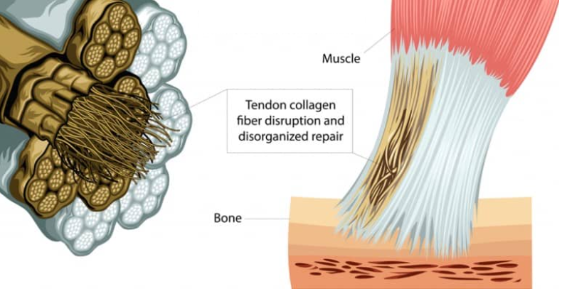
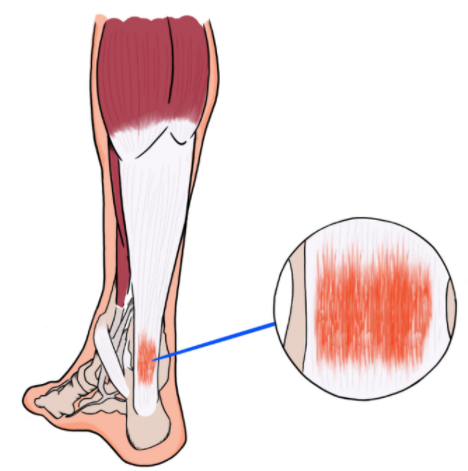
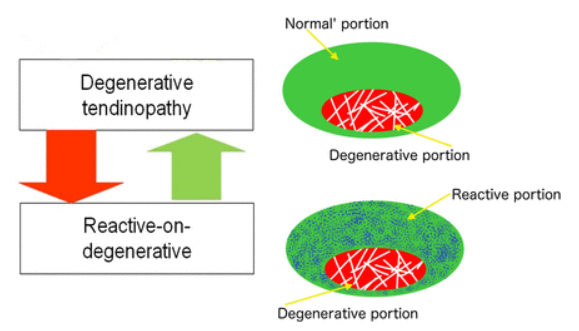
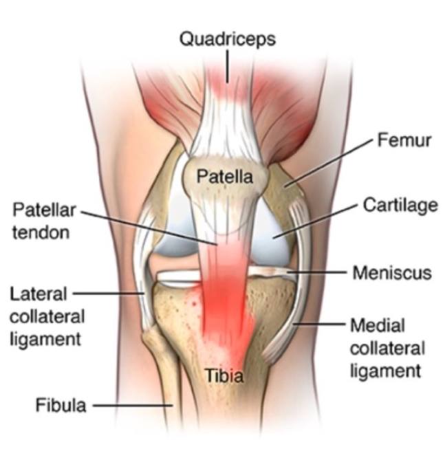

By Prem Parmar | Feb 22nd, 2021
Tendinopathy
I wanted to make a post on Tendon pathology because of how prevalent it is and how understanding the condition
a bit better would help people understand their rehab. I hope this post helps anyone with tendinopathy or
anyone with an interest in it learn about it. The latter half of the post is rehabilitation concepts I found useful
when reading up on the topic and I thought it may help my fellow clinicians.

What are Tendons?
Tendons are tissue in your body that connect muscle to bone. They have many
functions, but primarily they help transmit force from your
muscles to help you move.
What is Tendinopathy?

Tendinopathy is a failed healing response of a tendon with abnormalities
of tenocytes (tendon cells), and a disruption of the environment around the cell including collagen fibres, and
other proteins3.
- Tendon pathology does NOT always mean inflammation2
- Collagen tearing in your tendons is NOT the primary driver of tendinopathy2
A Continuum

Current research believes Tendinopathy is a continuum with
different parts of the tendon potentially being in different stages of healing1
- You have structurally normal parts of the tendon
- As well as the degenerative portion of the tendon, which
appears mechanically silent and therefore unable to transmit muscle force
like normal tendon tissue1
What About Pain?
-
Interestingly, the degenerative/pathological section of the
tendon does not seem to be related to pain2.
- The nerves that transmit pain information in the tendon are in the peri-tendon2 (the outer region).
-
Therefore, pain management often targets the peri-tendon1:
- Shockwave therapy
- NSAIDs
- Corticosteroid injections
-
Addressing pain is critical, it’s the primary reason patients will see
a physiotherapist. However, interventions directed solely at pain have a minimal
effect on the function of the tendon, and may result in the recurrence of pain1.

Treat the donut, not the hole!
-
Newer research shows that pathological portions of tendon have limited reversibility2.
-
Luckily, the healthy portion of tendon can compensate for the pathological
portion by increasing the amount of “healthy tendon tissue”2.
-
However, the amount of healthy tendon is not enough to prevent further tendinopathy2; To prevent
tendinopathy, we must strengthen the healthy portion of tendon through progressive exercise2.
Exercise!
Deficits are not only seen in the tendon with tendinopathy1,2. Deficits are also seen in:
- The attached muscle
- The kinetic chain
- Brain function/motor control
That’s why Physical Therapy and exercise are crucial to helping you get back to doing the things you love!
Four Stages of Rehabilitation
Isometrics
- To reduce pain
- No compression
Strength
- Muscle/kinetic chain strength
- Functional strength
- Strength endurance
- No compression
Energy storage
- Faster
- End of range eccentric
- Add compression
Energy storage and release
- Sport specific loading
- Compression
For Fellow Clinicians
As physiotherapists I feel we need to better identify, consider, and treat the specific loads tendons are meant to withstand.
- Energy storage loads (Spring loading of our tendons)
- Compressive loads (compression of tendons on bony prominences)
- Friction loads (between the tendon and different surfaces surrounding it)
As clinicians I feel we do well at early rehabilitation; I want to draw attention to later
stages of tendon rehabilitation, as these are concepts I myself tend to neglect.
Energy Storage Loads
- At the necessary point in rehabilitation, therapists should introduce exercises with speed2.
- This allows the tendon to act like a spring, by storing and releasing loads that are necessary for relevant physiological function.
- The speed and functional activity should mimic functional loads of that specific tendon.
Compressive Loads
-
At a similar point in rehabilitation where function is improving,
therapists should aim to introduce movements that increase compressive loads2.
- This allows for tendons to withstand compression that mimics “normal” physiological function.
- An example is compressive load of the Achilles tendon at end-range dorsiflexion4.
- These loads are typical during the push-off phase of gait.
References
- Cook, J. L., et al. "Revisiting the continuum model of tendon pathology: what is its merit in clinical practice and research?." British journal of sports medicine 50.19 (2016): 1187-1191
- Jill Cook – Current concepts in tendon rehabilitation. Web seminar.
- https://physiopedia.com/Tendinopathy?utm_source=physiopedia&utm_medium=search&utm_campaign=ongoing_internal
- Cook, Jillianne Leigh, and Craig Purdam. "Is compressive load a factor in the development of tendinopathy?." British journal of sports medicine 46.3 (2012): 163-168.